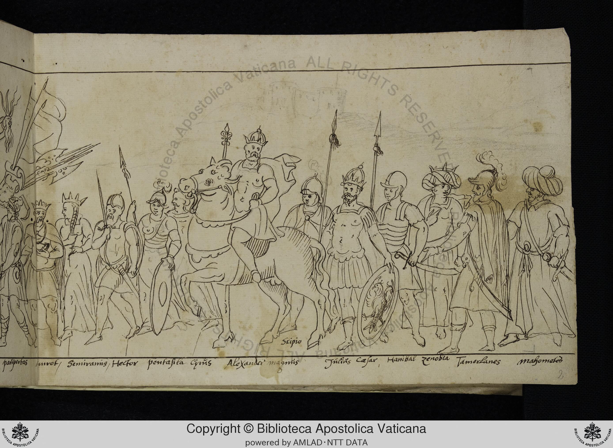

Folio f002r
This is not a typical triumph scene with a chariot. Instead, it depicts a procession of historical figures. Alexander the Great is the most prominent figure, riding a horse in the center.
Labeled Figures
- "panpertas" Unknown (likely a misspelling of "Paupertas," meaning Poverty) Figure on the far left, possibly female, holding a staff or spear.
- "murot" Unknown Figure next to "panpertas," possibly male, wearing a crown.
- "Semiraming" Semiramis Figure next to "murot," possibly female, wearing a crown and elaborate dress.
- "Hector" Hector Figure next to "Semiraming," male, holding a spear and shield.
- "pentasila" Penthesilea Figure next to "Hector," possibly female, holding a shield.
- "Cyrus" Cyrus the Great Figure next to "Penthesilea," possibly male, wearing a crown and holding a staff.
- "Alexander magnus" Alexander the Great Mounted warrior in the center, wearing a crown and cape.
- "Scipio" Scipio Africanus Figure next to Alexander's horse, possibly male, wearing armor and holding a spear.
- "Julius Cesar" Julius Caesar Figure next to "Scipio," male, wearing armor and holding a shield.
- "Hanibal" Hannibal Figure next to "Julius Cesar," male, wearing armor and holding a sword.
- "Zenobia" Zenobia Figure next to "Hanibal," possibly female, wearing a turban-like headdress.
- "Tamerlanes" Tamerlane (Timur) Figure next to "Zenobia," male, wearing a turban and holding a sword.
- "mazometer" Mahomet (Muhammad) Figure on the far right, male, wearing a large turban and holding a sword.
Significance
- This drawing belongs to the tradition of Petrarchan Trionfi, specifically the Triumph of Fame, which often includes processions of famous historical figures. - The inclusion of figures like Semiramis, Penthesilea, and Zenobia suggests an interest in female historical figures, which is notable. - The presence of both classical figures (Alexander, Caesar, Hannibal, Scipio) and figures from later periods (Tamerlane, Muhammad) indicates a broad understanding of historical fame. - The inclusion of Muhammad is interesting and potentially controversial, depending on the context and intended audience of the manuscript. - The misspelling of "Paupertas" as "panpertas" suggests a possible lack of familiarity with Latin or a simple error in transcription. - The selection of figures suggests a focus on military and political power.